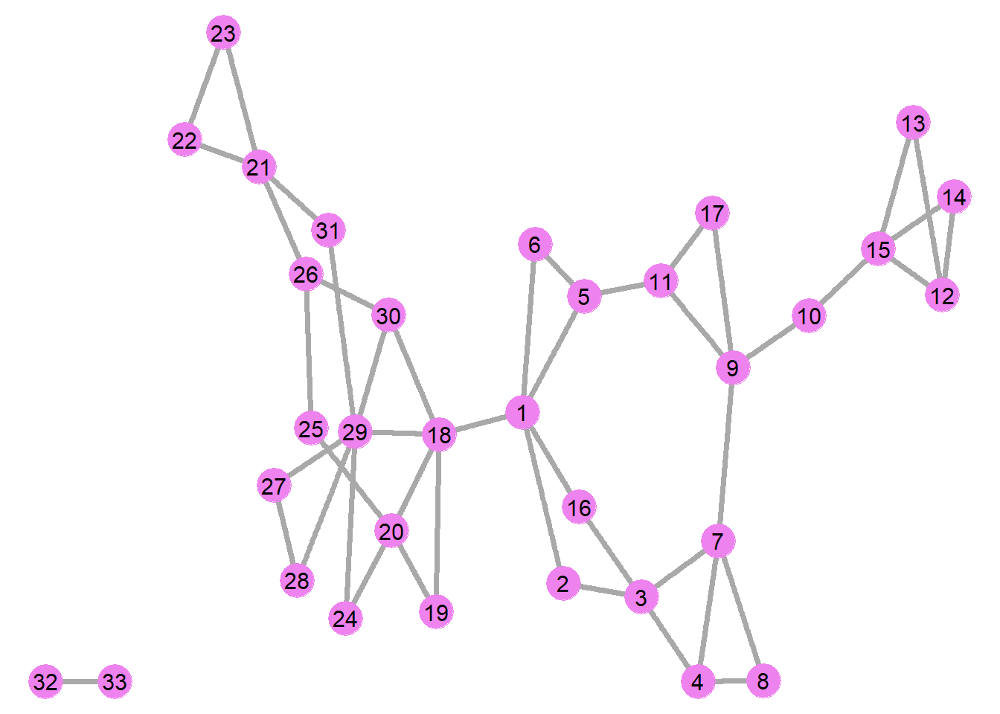
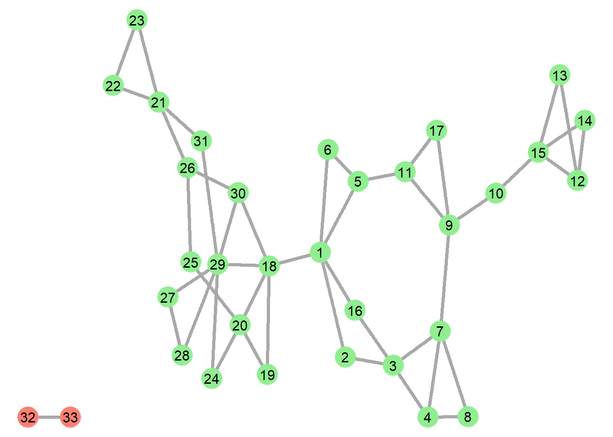
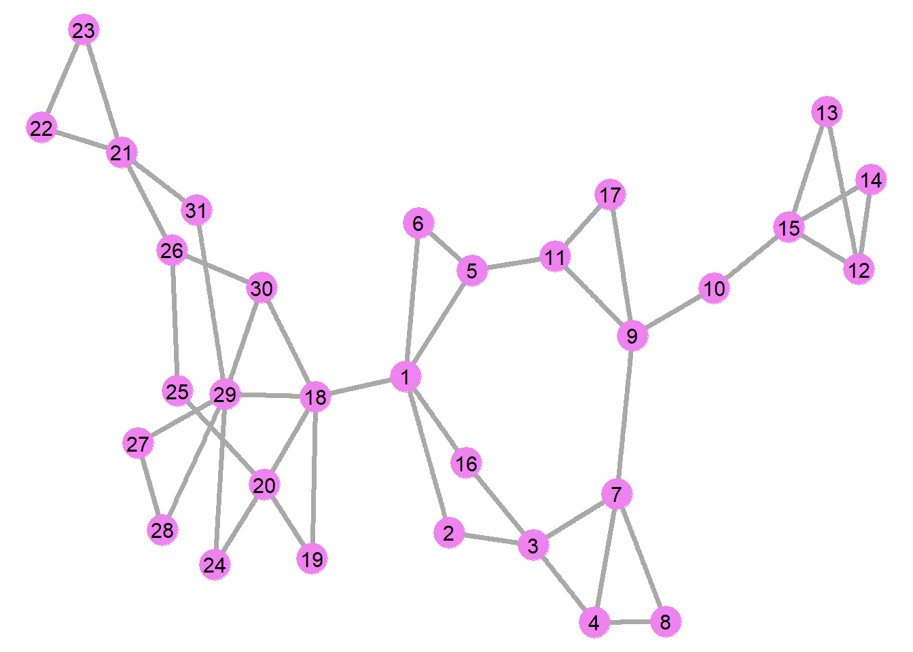
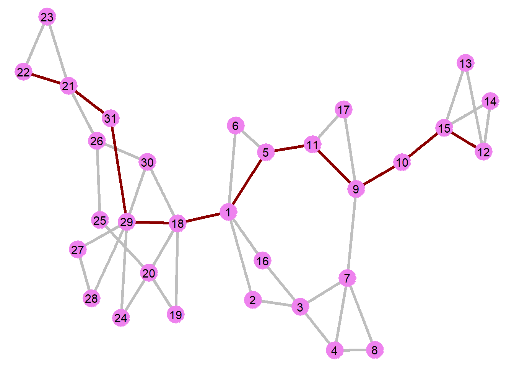
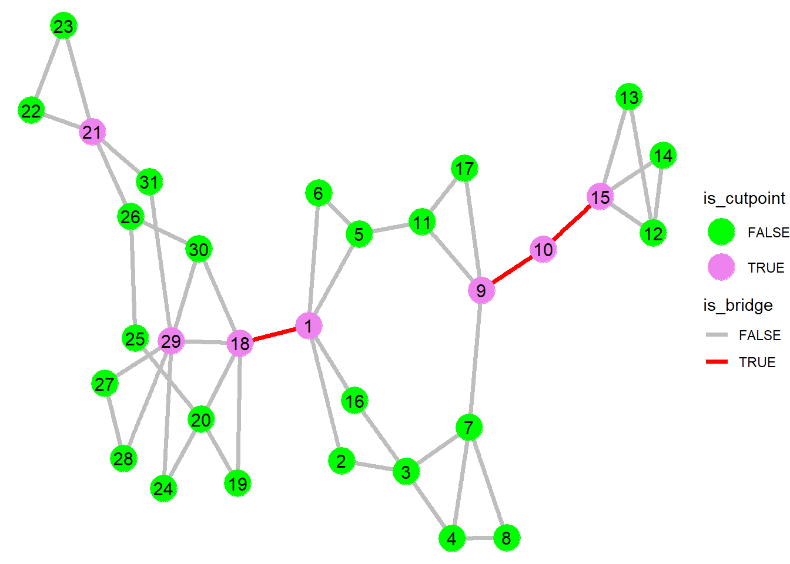

library(intronets)
library(igraph)
library(ggraph)
library(tidyverse)6 Connectivity
6.1 Connectivity
Connectivity is one of the foundational concepts in social network analysis. It refers to whether and how nodes in a graph are connected to one another via lines. This is important to consider especially in instances where various elements (like information, resources, or disease) flow across networks. In these instances, we can consider which nodes are easiest or hardest to reach. Also, how do different network structures affect reachability.
Let’s begin by loading the intronets, igraph, ggraph, and tidyverse packages.
6.2 Moreno data
We will use classic network data from the social psychologist, Jacob Moreno, who observed the friendship relationships between 5th grade students in 1934. In fact, Moreno is credited with being the first person to publish a network graph (or a “sociogram”) to describe network relationships. Let’s load the data.
load_nets("moreno.rda")
morenoIGRAPH ffcd9c8 U--- 33 46 --
+ attr: gender (v/n), na (v/l), vertex.names (v/n), na (e/l)
+ edges from ffcd9c8:
[1] 1-- 2 1-- 5 1--18 1-- 6 1--16 2-- 3 3-- 4 3-- 7 3--16 4-- 7
[11] 4-- 8 5-- 6 5--11 7-- 8 7-- 9 9--10 9--11 9--17 10--15 11--17
[21] 12--15 12--13 12--14 13--15 14--15 18--30 18--29 18--19 18--20 19--20
[31] 20--24 20--25 21--31 21--26 21--23 21--22 22--23 24--29 25--26 26--30
[41] 27--28 27--29 28--29 29--30 29--31 32--33Examining the features of the data, we can see that the network is undirected (see the “U” on the top line) and contains 33 vertices and 46 edges. Let’s graph the network.
ggraph(moreno, layout = "stress") +
geom_edge_link(color = "darkgrey", width = 1.25) +
geom_node_point(color = "violet", size = 8) +
geom_node_text(aes(label = vertex.names), size = 4) +
theme_void()
6.3 Connected graphs and components
A connected graph is a graph in which every node can be reached by every other node by following the paths laid out by the edges. Here we can see that the Moreno network is disconnected. For example, student 28 can follow edge paths to nearly all of the other students, but it cannot reach students 32 or 33 because there is no edge path that connects them. Within a disconnected graph such as this, we could identify a set of components, which refer to a fully connected subgraph. We can let R identify the components in the Moreno graph by using the components command from igraph.
(comps <- components(moreno))$membership
[1] 1 1 1 1 1 1 1 1 1 1 1 1 1 1 1 1 1 1 1 1 1 1 1 1 1 1 1 1 1 1 1 2 2
$csize
[1] 31 2
$no
[1] 2The newly created comps object contains three list elements. The last element (no) tells us that there are 2 components in the network – which of course is easy to see from the graph. The csize element refers to the number of nodes in each component, indicating that we have one large component with 31 nodes and one small component with 2 nodes. Finally, the membership element assigns a value to each node based on which component of which it is a member.
Let’s apply the membership vector to the igraph object as a vertex attributed and then differentiate the components in the graph by color.
V(moreno)$component <- comps$membership
ggraph(moreno, layout = "stress") +
geom_edge_link(color = "darkgrey", width = 1.25) +
geom_node_point(aes(color = as.factor(component)), size = 8, show.legend = FALSE) +
geom_node_text(aes(label = vertex.names), size = 4) +
scale_color_manual(values = c("lightgreen","salmon")) +
theme_void()
Note the changes to this ggraph command. In the geom_node_point command, we called for the aes option, which tells ggraph to look for values that are part of the igraph object. We colored the nodes based on the values in the component vertex attribute vector, treating that vector as a factor to note that the numbers are discrete units rather than part of a continuum. At the end of that line, we told ggraph not to include a legend for the graph. The scale_color_manual function sets the colors: light green for component 1 and salmon for component 2.
Identifying components can also be useful for extracting elements of the graph. In this case, let’s say we are only interested in the reachability of students who are in the largest component of this network – otherwise known as the “main” component.
First we’ll identify the largest component. Then we can use the induced_subgraph command to select only that component, creating a new igraph object (moreno2) in which students 32 and 33 are removed.
(largest <- which.max(comps$csize))[1] 1moreno2 <- induced_subgraph(moreno,
which(comps$membership == largest))
ggraph(moreno2, layout = "stress") +
geom_edge_link(color = "darkgrey", width = 1.25) +
geom_node_point(color = "violet", size = 8) +
geom_node_text(aes(label = vertex.names), size = 4) +
theme_void()
6.4 Paths and distances
Network researchers often want to know how close or how far apart different nodes are from one another. We calculate distance by counting the edges between two nodes. The set of edges that one traverses on that journey is referred to as a path.
Let’s look at some examples. Take a look at student 9 and student 1. How close are these two students? The answer depends on the number of edges that it takes to get from 9 to 1. However, that distance depends on which path one takes. Below we obtain a list of those paths.
all_simple_paths(moreno2, from = "9", to = "1")[[1]]
+ 5/31 vertices, from 749a32b:
[1] 9 7 3 2 1
[[2]]
+ 5/31 vertices, from 749a32b:
[1] 9 7 3 16 1
[[3]]
+ 6/31 vertices, from 749a32b:
[1] 9 7 4 3 2 1
[[4]]
+ 6/31 vertices, from 749a32b:
[1] 9 7 4 3 16 1
[[5]]
+ 7/31 vertices, from 749a32b:
[1] 9 7 8 4 3 2 1
[[6]]
+ 7/31 vertices, from 749a32b:
[1] 9 7 8 4 3 16 1
[[7]]
+ 4/31 vertices, from 749a32b:
[1] 9 11 5 1
[[8]]
+ 5/31 vertices, from 749a32b:
[1] 9 11 5 6 1
[[9]]
+ 5/31 vertices, from 749a32b:
[1] 9 17 11 5 1
[[10]]
+ 6/31 vertices, from 749a32b:
[1] 9 17 11 5 6 1igraph identifies 10 different paths that student 9 might take to, say, pass a note to student 1. A more circuitous route would involve passing the note to student 7, then 8, 4, 3, 2, and finally to 1. This involves 6 edges and therefore a distance of 6. However, student 9 could choose a more direct route by following the path from student 11 to 5 to 1, for half the distance of that longer path.
In this way, distances between nodes are defined by the shortest path length between two nodes. This is referred to as the geodesic distance. Below we ask for the set of geodesic paths between students 9 and 1.
shortest_9to1 <- all_shortest_paths(moreno2, from = "9", to = "1")
shortest_9to1$res[[1]]
+ 4/31 vertices, from 749a32b:
[1] 9 11 5 1In this case, we see that there is only one geodesic path between students 9 and 1: 9 - 11 - 5 - 1. In other instances, we might find several geodesic paths. If we are only interested in the geodesic distance, rather than the specific path, the following command can be used.
distances(moreno2, v = "9", to = "1") [,1]
[1,] 3The distance value (3) is presented as a matrix (a distance matrix). Without referencing specific vertices in the command, the function returns a matrix for all i,j combinations within the network.
distmat <- distances(moreno2)
as_tibble(distmat)# A tibble: 31 × 31
V1 V2 V3 V4 V5 V6 V7 V8 V9 V10 V11 V12 V13
<dbl> <dbl> <dbl> <dbl> <dbl> <dbl> <dbl> <dbl> <dbl> <dbl> <dbl> <dbl> <dbl>
1 0 1 2 3 1 1 3 4 3 4 2 6 6
2 1 0 1 2 2 2 2 3 3 4 3 6 6
3 2 1 0 1 3 3 1 2 2 3 3 5 5
4 3 2 1 0 4 4 1 1 2 3 3 5 5
5 1 2 3 4 0 1 3 4 2 3 1 5 5
6 1 2 3 4 1 0 4 5 3 4 2 6 6
7 3 2 1 1 3 4 0 1 1 2 2 4 4
8 4 3 2 1 4 5 1 0 2 3 3 5 5
9 3 3 2 2 2 3 1 2 0 1 1 3 3
10 4 4 3 3 3 4 2 3 1 0 2 2 2
# ℹ 21 more rows
# ℹ 18 more variables: V14 <dbl>, V15 <dbl>, V16 <dbl>, V17 <dbl>, V18 <dbl>,
# V19 <dbl>, V20 <dbl>, V21 <dbl>, V22 <dbl>, V23 <dbl>, V24 <dbl>,
# V25 <dbl>, V26 <dbl>, V27 <dbl>, V28 <dbl>, V29 <dbl>, V30 <dbl>, V31 <dbl>All of the values on the diagonal of the matrix are zero. Do you know why? Because the distance between one student and themselves is zero. Off the diagonals, we can see a variety of different geodesic path distances. For example, students 1 and 2 are directly linked by an edge, which is why their geodesic distance is 1. By contrast, student 1 is three edges away from connecting with student 4.
Earlier it was noted that this network is undirected, which means that all ties are reciprocated. In other words, a line between two students represents a willingness to pass a note in either direction. Given this feature, the distance matrix is symmetric, which is to say that the values in the lower left are mirrored by the values in the upper right. As such, the distance that student 1’s note needs to travel to get to student 4 is three (see row 1, column 4), just as student’s 4’s note would travel the same distance to get back to student 1 (see column 1, row 4).
However, in a directed network, student 3 might be willing to pass a note to student 4, but might not be willing to receive a note from student 4. In that case, student 4 would have to follow an alternate (and longer) path to pass their note to student 1.
What happens if we attempt to estimate the distance matrix for a disconnected graph? Let’s generate the new matrix and present only the distances between the last 10 students (students 24-33).
distmat_full <- distances(moreno)
as_tibble(distmat_full[24:33,24:33])# A tibble: 10 × 10
V1 V2 V3 V4 V5 V6 V7 V8 V9 V10
<dbl> <dbl> <dbl> <dbl> <dbl> <dbl> <dbl> <dbl> <dbl> <dbl>
1 0 2 3 2 2 1 2 2 Inf Inf
2 2 0 1 4 4 3 2 3 Inf Inf
3 3 1 0 3 3 2 1 2 Inf Inf
4 2 4 3 0 1 1 2 2 Inf Inf
5 2 4 3 1 0 1 2 2 Inf Inf
6 1 3 2 1 1 0 1 1 Inf Inf
7 2 2 1 2 2 1 0 2 Inf Inf
8 2 3 2 2 2 1 2 0 Inf Inf
9 Inf Inf Inf Inf Inf Inf Inf Inf 0 1
10 Inf Inf Inf Inf Inf Inf Inf Inf 1 0The final two students (32 and 33) are disconnected from the graph. Their distances appear in rows and columns 9 and 10. The “INF” values indicate their distances to others in the graph are infinite and therefore cannot be calculated. The only estimable distances are among themselves.
6.4.1 Node distance summaries
One might want to compare students in terms of their overall reachability within a network. For this we can examine the average geodesic distance that it would take for a student to pass a note to one of their classmates. For this, let’s return to the distance matrix from the main component of the Moreno graph. Student 1’s average distance can be obtained by taking the sum of the distance values in row 1 and dividing by the number of total students (length(moreno2)) minus 1. We can then compare student 1’s average to that of student 9.
sum(distmat[1,])/(length(moreno2)-1)[1] 3.066667sum(distmat[9,])/(length(moreno2)-1)[1] 3.933333The results show that student 1 is, on average, closer to the rest of the students than is student 9. Student 1’s average geodesic distance to other students is about 3 edges, compared to nearly 4 edges for student 9.
Another way to examine this is to estimate the longest path distance that a student would have to travel to get to another student. This is referred to as a node’s eccentricity. This can be obtained via the eccentricity command. See how the same estimates can be obtained by selecting the maximum values for the rows in the distance matrix.
eccentricity(moreno2) [1] 6 6 7 8 6 6 8 9 8 9 7 11 11 11 10 6 8 7 8 8 10 11 11 9 9
[26] 9 9 9 8 8 9max(distmat[1,])[1] 6max(distmat[9,])[1] 8Not surprisingly, student 1 has a lower eccentricity score (6) than student 9 (8).
6.5 Network distance summaries
The geodesic distances that appear in the matrix provide important information about reachability in the network as a whole. For example, we could calculate the average geodesic distance for the entire network.
mean_distance(moreno2)[1] 4.417204Comparing this result to the earlier node mean results, we can say that both student 1 and student 9 have mean distance scores (3.1 & 3.9, respectively) that are lower than the average score for the network (4.4).
Diameter is an important network summary measure. It is, ostensibly, a measure of the distance that it would take to travel from one end of the graph to the opposite end. Technically speaking, it refers to the largest eccentricity in the distance matrix. We obtain this below for the Moreno network’s main component by using the diameter command. Also note that the value is the same as the maximum number from the eccentricity vector.
(diam <- diameter(moreno2))[1] 11max(eccentricity(moreno2))[1] 11The results show that the diameter of the main component is 11.
How do we know which pair of students is farthest away – i.e., has a geodesic distance of 11? igraph has a command for that
farthest_vertices(moreno2)$vertices
+ 2/31 vertices, from 749a32b:
[1] 12 22
$distance
[1] 11These results show that students 12 and 22 have a path distance that matches the diameter. But is this the only example of a diameter path? Unfortunately, the farthest_vertices command only selects the first diameter pair it comes across. To find out the other possible combinations, we could return to the distance matrix, asking which combinations match the diameter value.
which(distmat == diam, arr.ind = TRUE) row col
[1,] 22 12
[2,] 23 12
[3,] 22 13
[4,] 23 13
[5,] 22 14
[6,] 23 14
[7,] 12 22
[8,] 13 22
[9,] 14 22
[10,] 12 23
[11,] 13 23
[12,] 14 23Here we can see that there are a dozen diameter paths in this network.
6.6 Visualizing paths
How would one visualize a diameter path in a graph? First, identify and save as an object the diameter path. Second, use that object to create an edgelist that follows the path. We do this by creating a two column diameter_edges object with cbind, with the first column including all vertices in the path sequence except the last vertex (i.e., the “from” column) and the second column including all vertices except for the original vertex (i.e., the “to” column). From there we can apply different colors to the edges depending on whether or not they appear in the edgelist.
(diameter_path <- get_diameter(moreno2))+ 12/31 vertices, from 749a32b:
[1] 12 15 10 9 11 5 1 18 29 31 21 22(diameter_edges <- cbind(diameter_path[-length(diameter_path)],
diameter_path[-1])) [,1] [,2]
[1,] 12 15
[2,] 15 10
[3,] 10 9
[4,] 9 11
[5,] 11 5
[6,] 5 1
[7,] 1 18
[8,] 18 29
[9,] 29 31
[10,] 31 21
[11,] 21 22ggraph(moreno2, layout = "stress") +
geom_edge_link(aes(color = (from %in% diameter_path & to %in% diameter_path)), width = 1.25, show.legend = FALSE) +
geom_node_point(color = "violet", size = 8) +
geom_node_text(aes(label = vertex.names), size = 4) +
scale_edge_color_manual(values = c("TRUE" = "darkred", "FALSE" = "gray")) +
theme_void()
6.7 Cutpoints and Bridges
Finally, the study of connectivity often involves examining vulnerable aspects of the network – places that could lead to disconnection if they were to be removed.
Why might this prove useful? Imagine you are managing a company and you notice in the organizational chart that information flowing from one part of the company to the rest of the company only goes through a single connection. If that edge is compromised, perhaps by one of the two individuals going on extended sick leave, the company will have trouble communicating. You therefore might recommend establishing redundant lines of communication between units. As another example, imagine you are a member of an international terrorism task force. If you notice that one terrorist is central to their coordination efforts, you might focus on apprehending and thus removing that individual from the network to break up their activities.
These two examples point to the need for identifying network cutpoints and bridges. Cutpoints are vertices whose removal will disconnect the graph. Likewise, the removal of edges that are bridges will also disconnect the graph. Using the main component of the Moreno network, we can identify the set of cutpoints (also known as “articulation points”) and bridges.
(cutset <- articulation_points(moreno2))+ 7/31 vertices, from 749a32b:
[1] 15 10 9 29 21 18 1(bridgeset <- bridges(moreno2))+ 3/45 edges from 749a32b:
[1] 10--15 9--10 1--18The network is indeed vulnerable to disconnection, with 7 vertices in the cutset and 3 edges in the bridge set. We can further determine the overall level of vulnerability in the network.
min_cut(moreno2)[1] 1edge_connectivity(moreno2)[1] 1The results show that it would only take the removal of one vertex or one bridge to disconnect the network.
Finally, let’s visualize the bridges and cutpoints in the network. To do this, we need to assign logical vectors to the igraph object indicating if the vertex or the edge in question are part of the cutset or bridge set, Then we can color those vertices and edges differently in the graph.
V(moreno2)$is_cutpoint <- ifelse(V(moreno2)
%in% cutset, T,F)
E(moreno2)$is_bridge <- ifelse(E(moreno2)
%in% bridgeset, T,F)
ggraph(moreno2, layout = "stress") +
geom_edge_link(aes(color = is_bridge), width = 1.25) +
geom_node_point(aes(color = is_cutpoint), size = 8) +
geom_node_text(aes(label = vertex.names), size = 4) +
scale_edge_color_manual(values = c("grey","red")) +
scale_color_manual(values = c("green","violet")) +
theme_void()
Here we have a helpful visualization that allows us to see the vulnerable places in the network. Note how removing any one of those elements would disconnect the graph.